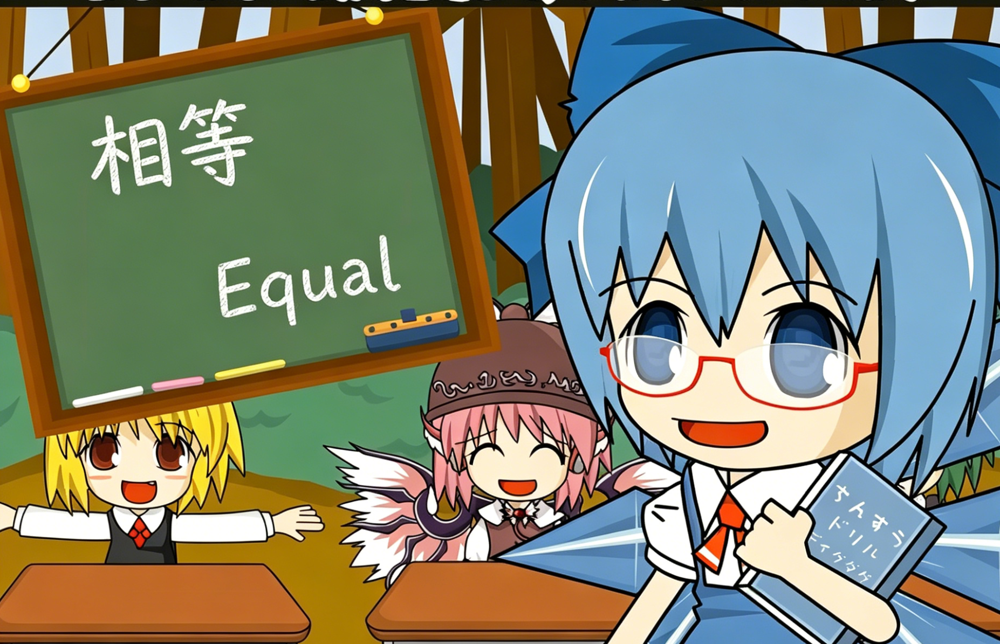

圆心角定理
Central Angle Theorem
同圆中，相等的圆心角所对的弧和弦相等
Equal central angles subtend equal arcs and chords
📐 在同圆中，相等的圆心角所对的弧相等，所对的弦相等
📐 In the same circle, equal central angles subtend equal arcs and equal chords

🖱️
拖拽 A、B、C、D 四点（接近时自动吸附为相等）
Drag A, B, C, D — snaps when angles are nearly equal